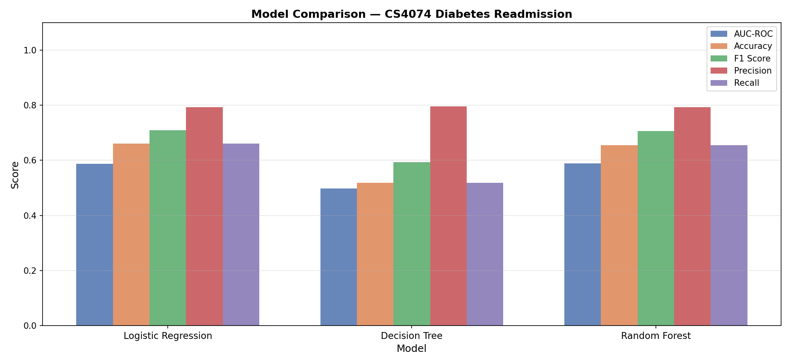
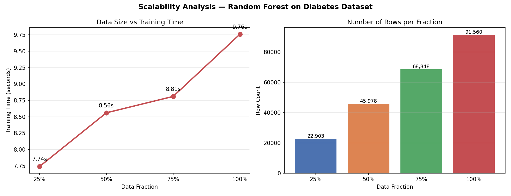
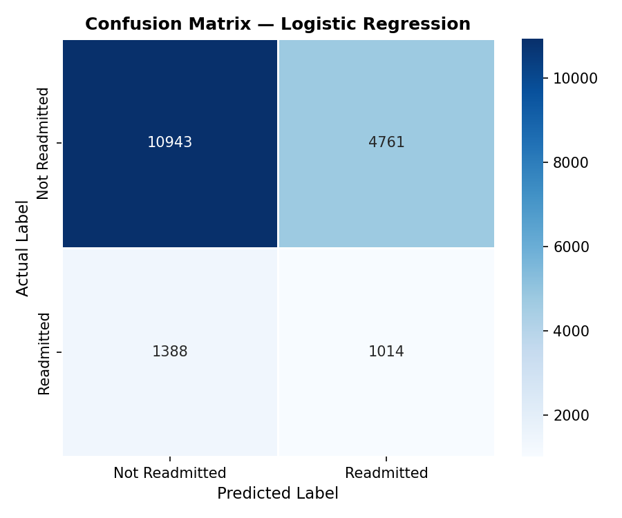

Big Data Analytics Project — CS4074
This project uses PySpark and Spark MLlib to build a scalable machine learning pipeline for predicting hospital readmission using diabetic patient records. The goal is to analyze how noisy and incomplete medical records affect prediction accuracy and compare model performance before and after preprocessing.
Raw Data → Data Cleaning → Preprocessing → Feature Engineering → Machine Learning Models → Evaluation → Noise Simulation → Final Comparison



Nafeesa Mahek
Aseel
Jumanah
Hams